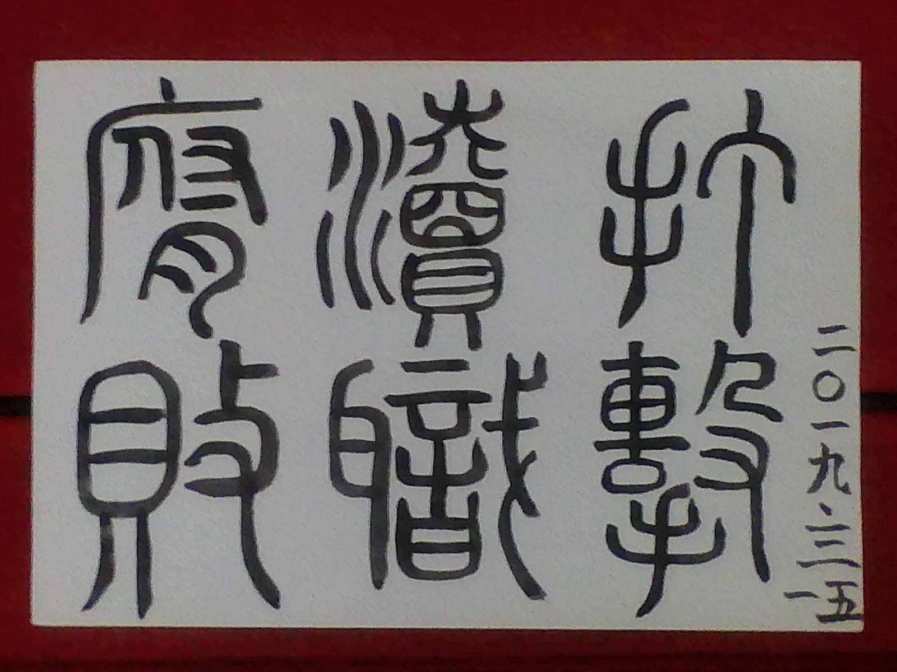

简介：既然关注了打击渎职腐败，也就不能对世界任何一个角落的受害人隔岸观火， 这里将关注世界各地的渎职腐败案件，以及环境污染问题。 哪里有冤屈，哪里有罪恶，哪里就应该有正义的力量！世界各地的其它案件， 也必有值得我们借鉴之处。
打击渎职腐败宣誓
我宣誓，我将把人生的首要目标定为打击渎职腐败！ 如果遇到违法犯罪分子或者渎职腐败人员不敢举报的， 就是胆小、可耻懦夫！如果打击违法犯罪、打击渎职腐败 不成功，就绝不贪图世间的安逸！拒绝一切消遣娱乐活动！
勇往直前，做好打击渎职腐败的每一个准备动作
证据材料，举报信！最基本的材料！每天花一个小时整理！并合理规划举报流程及所需时间！无论是作为举报人还是作为受理方都须有一定文字语言表达能力，不需要多么强大，但至少要把事情说清楚，叙述要清晰。不要一个小时都说不清楚一个案件！多读文言文可以练习口才。为锻炼文笔，适时练习书法是必要的！

毛笔书法可以纠正字迹潦草、形体不规问题。若用word写可忽略此步骤，直接进行一切有关举报材料的拟写。